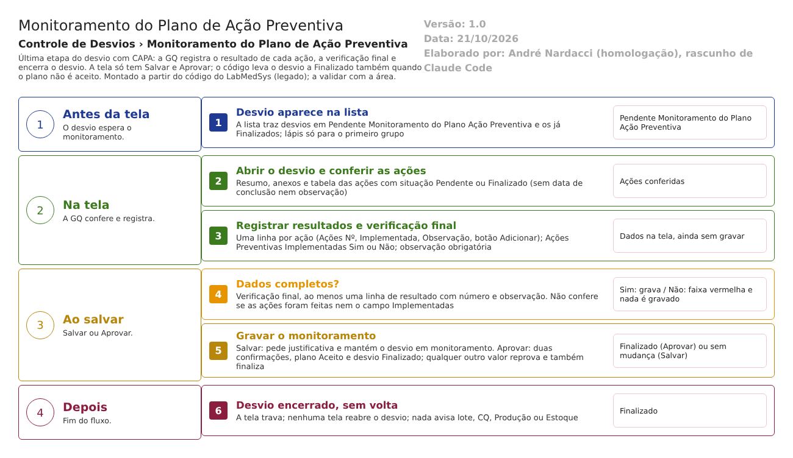

- O desvio está em Pendente Monitoramento do Plano Ação Preventiva e aparece na lista. A GQ pesquisa e clica no lápis.
- A tela mostra o resumo do desvio, os anexos e as ações do plano com a situação de cada uma (Pendente ou Finalizado).
- A GQ adiciona uma linha de resultado por ação (número, implementada, observação), marca se as ações foram implementadas (rodada 2: a tela não mostra esse campo, CT-GQ-N12-11), escreve a observação da verificação final e, se quiser, a observação do responsável.
- A GQ escolhe: Salvar (grava e continua; pede justificativa) ou Aprovar (duas confirmações).
- O sistema confere a verificação final e as linhas de resultado. Se faltar algo, mostra a faixa vermelha e nada é gravado.
- Estando tudo certo, o sistema grava o monitoramento, marca o plano como Aceito e leva o desvio a Finalizado. A tela trava e o desvio não volta. Saídas alternativas: recusa por falta de dados; Salvar sem encerrar; Voltar sem salvar. Não há Reprovar nem cancelamento.
Situações e histórico
Situação do desvio
- Entrada: Pendente Monitoramento do Plano Ação Preventiva.
- Saída ao Salvar: nenhuma mudança.
- Saída ao Aprovar: Finalizado (no código, Concluído; o código é o mesmo valor 6 do enum, descrição "Finalizado"; Domain/Enumeradores/TipoSituacao.cs:19-20).
- Saída por reprovação: não existe na tela; o código leva ao mesmo Finalizado.
- Depois de Finalizado, nenhuma tela leva o desvio para outra situação. Não há reabertura.
Situação do plano preventivo
- Nasce Pendente Aprovação (Bloco2/Controllers/PlanoAcaoPreventivaRNCController.cs:131), passa a Aceito (Aprovar) ou Não Aceito (:241,246). A situação do plano é diferente da do desvio.
- Para ler a lista: a coluna SITUAÇÃO traz a situação do desvio, não a do plano.
O que entra na trilha de auditoria (histórico)
- Primeira gravação: inclusão do registro de monitoramento com histórico (LiberacaoPlanoAcaoPreventivaRNCController.cs:262) e alteração do desvio com histórico (:272).
- Gravações seguintes: alteração do monitoramento com justificativa e linhas manuais sobre anexos e resultados incluídos ou excluídos (:269; :427-556).
- Salvar sem encerrar também registra a alteração do desvio, sem justificativa (:355).
- Inferência: na primeira gravação, o monitoramento é gravado antes do desvio (:262, SaveChanges grava tudo o que está pendente), de modo que a comparação automática do desvio (:272) pode sair vazia, e as linhas manuais (anexos e resultados) não são passadas nesse caminho (:262-266). A confirmar no teste: abrir o histórico depois de Aprovar direto, sem Salvar antes, e comparar com o caso em que houve Salvar antes.
O que não grava histórico
- A justificativa no próprio registro de monitoramento (RN-GQ-D12-09).
- Quem encerrou e quando: só a data de criação do monitoramento (primeiro Salvar) e a atualização do desvio.
- Imprimir, pesquisar e abrir a tela.
- A assinatura de quem aprova: nenhuma (as regras de acesso estão no documento interno).
Rodada 2 (22/10/2026)
- O que a leitura do código previa para o histórico (primeira gravação com inclusão e alteração, gravações seguintes com linhas manuais) não apareceu na tela: depois de Salvar e depois de Aprovar o histórico do desvio não ganhou nenhum registro (CT-GQ-N12-13; DV-GQ-047; RN-GQ-D12-20).
- A inferência de "histórico incompleto na primeira gravação" se confirmou de forma mais grave: não é só incompleto, está vazio. A diferença entre Salvar antes de Aprovar (072/26) e Aprovar direto (059/26, 057/26, 056/26, 065/26 e 046/26) não apareceu: nos dois casos nada foi registrado.
Dados
Tabelas do banco tocadas
| Tabela | Colunas principais | Chaves | Uso nesta tela | Fonte |
|---|---|---|---|---|
| TBL_REGISTRO_RNC | Situacao, Descricao, DATA_CRIACAO, DATA_ALTERACAO, ID_USUARIO_ALTERACAO, PlanoAcaoPreventivaRNC_Id | PK do desvio | Lê a lista; grava a situação Finalizado e a atualização | DB/TBL_REGISTRO_RNC.sql:7,35 |
| TBL_PLANO_ACAO_PREVENTIVA_RNC | Situacao (Aceito ou Não Aceito), LiberacaoPlanoAcaoPreventivaRNC_Id | PK ID_PLANO_ACAO_PREVENTIVA_RNC; FK para a liberação | Atualiza a situação do plano e o vínculo | DB/TBL_PLANO_ACAO_PREVENTIVA_RNC.sql:9,18 |
| TBL_LIBERACAO_PLANO_ACAO_PREVENTIVA_RNC | IdResponsavel, NomeResponsavel, Justificativa, ObservacoesRecomendacoesFinais, Situacao, AcoesPreventivasImplementadas, Observacao, datas e usuários | PK ID_LIBERACAO_PLANO_ACAO_PREVENTIVA_RNC | Guarda o monitoramento (o código o chama de liberação). IdResponsavel e Situacao não são preenchidos pelo controlador | DB/TBL_LIBERACAO_PLANO_ACAO_PREVENTIVA_RNC.sql:2-17; LiberacaoPlanoAcaoPreventivaRNCController.cs:220-237 |
| TBL_ACAO_RESULTADO | AcaoNumero, Implementada, Observacoes, LIXEIRA, LiberacaoPlanoAcaoPreventivaRNC_Id (e a coluna do corretivo, na mesma tabela) | PK ID_ACAO_RESULTADO; FKs para as duas liberações | Uma linha por resultado de ação | DB/TBL_ACAO_RESULTADO.sql:2-18 |
| TBL_ACAO_PREEVENTIVA (nome com erro de grafia) | Descricao, NomeResponsavel, DataPrazo, Situacao | PK ID_ACAO_PREEVENTIVA | Só leitura, para a tabela de ações | DB/TBL_ACAO_PREEVENTIVA.sql |
| Anexos (no código TBL_ANEXO_GQ; no projeto de banco TBL_ANEXO) | Arquivo, Descricao, Tamanho, ChaveDiretorio | PK própria | Anexos do desvio | HSolutions.GQ.Context/Configurations/AnexoConfiguration.cs:10 |
| Histórico (no código TBL_LOG_ALTERACAO_GQ e _ITEM) | Objeto, campo, valor antigo, valor novo, data, usuário, justificativa | PK própria | Grava o histórico | HSolutions.GQ.Context/Configurations/LogAlteracaoConfiguration.cs:16. A confirmar com o DBA (RN-GQ-005) |
O que lê ou grava em outros módulos
| Módulo | O que | Meio | Fonte |
|---|---|---|---|
| Principal | Nome de quem atualizou o desvio, para a tela | Serviço de usuários do Principal | LiberacaoPlanoAcaoPreventivaRNCController.cs:120-122 |
| Principal | Usuário conectado (nome gravado na liberação) | Gerenciador de sessão | UI/Controllers/GQControllerBase.cs:58-69 |
| Principal | Áreas e responsáveis das áreas, só na impressão | API do Principal, pelo serviço de áreas | LiberacaoPlanoAcaoPreventivaRNCController.cs:391; Bloco2/Controllers/ServiceBloco2.cs:16-30 |
| Produção, Estoque, Controle da Qualidade | Nada. Encerrar o desvio não avisa nem bloqueia nenhum lote (ponto de atenção 6 do fluxo) | Não se aplica | Ausência nas chamadas do controlador |